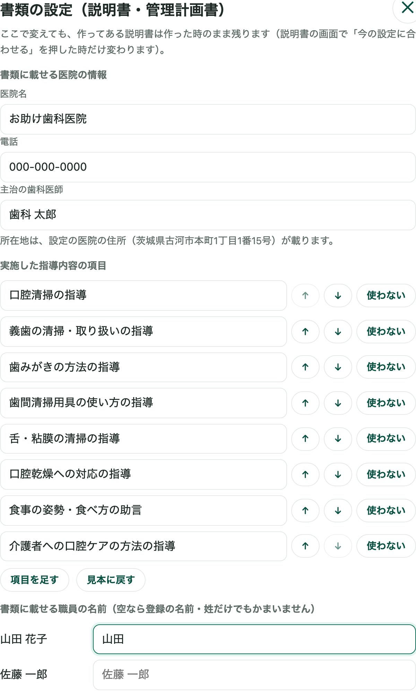
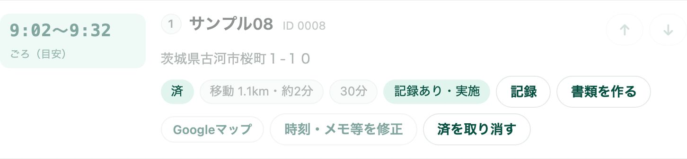
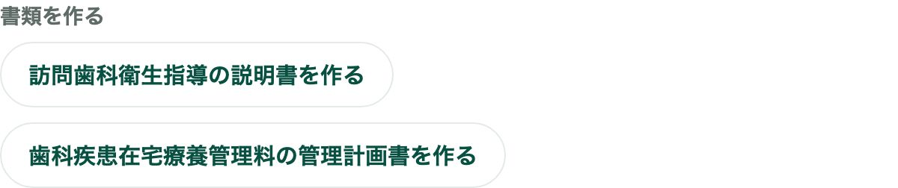
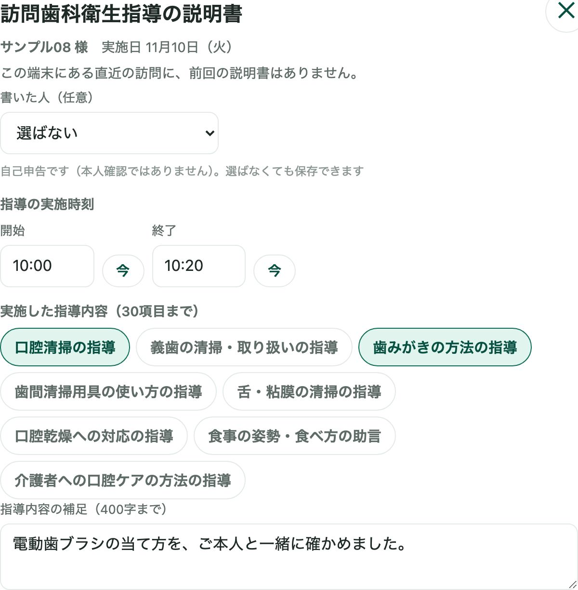
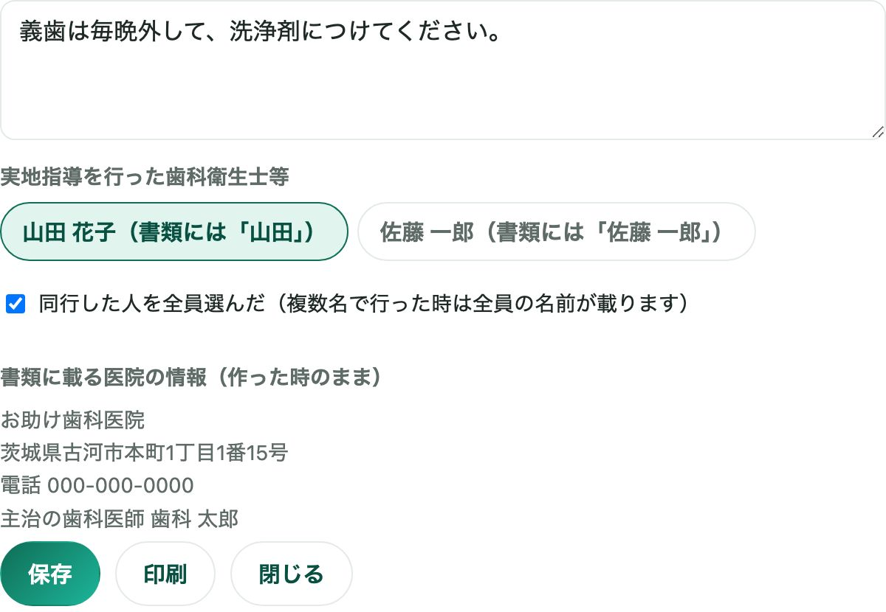
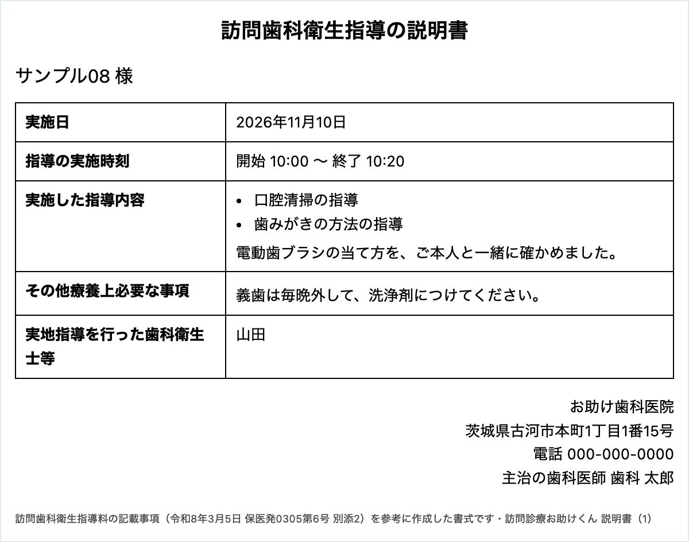
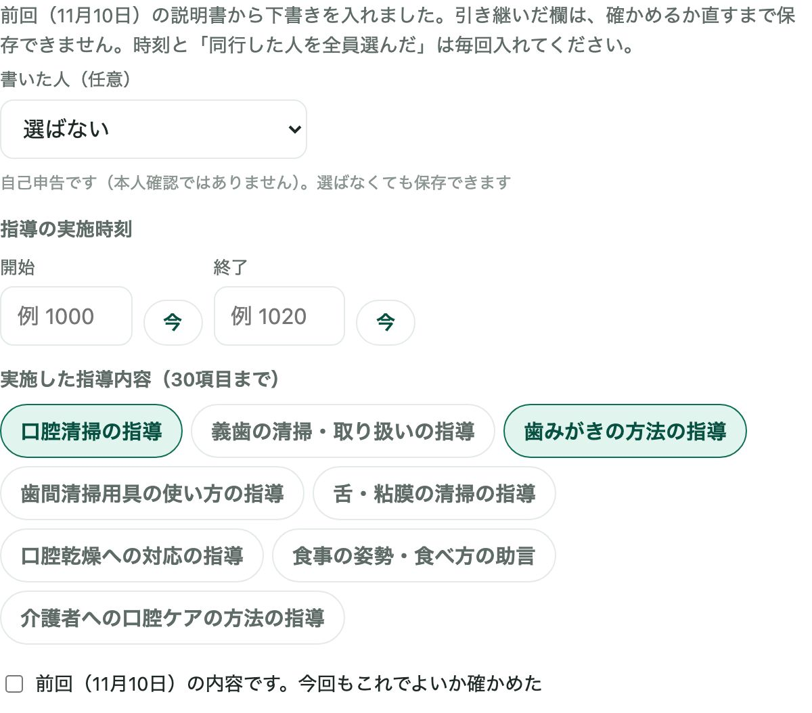

GUIDE — 説明書の作り方
訪問歯科衛生指導の説明書をアプリで作る──訪問の記録から作り、記載事項を埋めて印刷する
訪問診療お助けくんで、訪問歯科衛生指導の説明書を作る手順を、実際の画面で説明します。説明書は、その訪問の記録から作り、決まった記載事項の欄を埋めて印刷します。
医院や患者さんの登録がまだの方は、先にはじめての使い方をご覧ください。
POINTS — 先に知っておくと迷わないこと
- 説明書は、訪問の記録が「実施」になった訪問から作ります
- 医院名・電話・主治の歯科医師・指導内容の項目は、設定で一度入れておけば毎回は入れません
- 次の訪問では、前回の説明書から下書きが入ります。時刻は毎回入れます
説明書に載る項目
アプリの説明書は、通知に書かれた記載事項に沿った欄でできています。
欄の名前は、訪問歯科衛生指導料の記載事項（令和8年3月5日 保医発0305第6号 別添2）の言葉に合わせています。紙の下にも、この通知を参考に作成した書式であることを小さく載せます。
| 通知の記載事項 | アプリの欄 |
|---|---|
| 実施した指導内容 | 「実施した指導内容」の項目と、補足の文 |
| 指導の実施時刻（開始・終了） | 「指導の実施時刻」の開始と終了 |
| その他療養上必要な事項 | 「その他療養上必要な事項」 |
| 実地指導を行った歯科衛生士等の氏名 | 「実地指導を行った歯科衛生士等」 |
このほかに、患者さんの名前・実施日・医院名が載ります。所在地・電話・主治の歯科医師は、登録されているときに載ります。
職員の名前は姓だけでもよいとされているため（令和8年4月1日 疑義解釈 その2 問7）、書類に載せる名前を職員ごとに決められます。
この説明書は、指導の内容を患者さん等に渡す文書の準備に使うものです。算定の可否や、診療録に何を書くかの判断は、各医院で行ってください。
STEP 1書類の設定を入れる
医院の情報と、指導内容の項目を一度入れておきます。
- 「設定」の「訪問の記録」で、「訪問の記録を使う」をオンにします。
- 職員は、記録の項目と職員を編集 で登録します。
- 書類の設定（訪問歯科衛生指導の説明書） を押し、医院名・電話・主治の歯科医師を入れます。
- 「実施した指導内容の項目」を、医院で使う言葉に直します。足すときは 項目を足す、使わない項目は 使わない です。
- 職員の名前を書類で短くしたいときは、「書類に載せる職員の名前」に入れて、保存 を押します。

所在地は、設定の医院の住所が載ります。指導内容の項目は、はじめは見本の8つが入っています。
STEP 2訪問の記録から説明書を作る
その日の予定から、訪問の記録を開いて説明書を作ります。
- その日の予定で、訪問の行の 書類を作る を押します。このボタンが出ていないときは 記録 を開きます。
記録がまだのときは、状態を「実施」にして保存します。 - 「書類を作る」の欄の 訪問歯科衛生指導の説明書を作る を押します。


記録を書いているときに「実施」を選ぶと、「保存して説明書を作る」で、保存と説明書を続けて開くこともできます。
STEP 3記載事項を埋めて保存する
説明書の画面で、指導の実施時刻・指導内容・その他療養上必要な事項・指導した人を入れます。
- 「指導の実施時刻」に開始と終了を入れます。「1000」のように4桁でも入れられ、今 で今の時刻が入ります。
- 「実施した指導内容」で、行った項目を押して選びます。項目にない内容は、補足の欄に書きます。
- 「その他療養上必要な事項」を書きます。無いときも「特になし」と書きます。
- 「実地指導を行った歯科衛生士等」で、指導した人を選びます。
- 「同行した人を全員選んだ」にチェックを付けて、保存 を押します。


複数名で訪問したときは、同行した人を全員選びます。選んだ全員の名前が、紙に載ります。
入っていない欄があると、印刷のボタンは押せません。ボタンの下の「印刷するには：」に、足りない欄が出ます。
STEP 4紙を確かめて印刷する
紙の見本で中身を確かめてから、印刷します。
- 保存したあと、紙の見本を見る を開いて、印刷される紙を確かめます。
- 印刷 を押して、プリンターで印刷します。印刷が終わると「印刷済みにしますか」と聞かれます。
- ケアマネジャーに伝えたときは、「ケアマネに連絡済み」にチェックを付けます。

まだ印刷していない説明書は、ホームの「書類の未済」に数えます。未印刷と、直した後に未印刷の説明書を、そこから探せます。
印刷せずに手書きなどで渡したときは、印刷せずに印刷済みにする を押します。このボタンは、印刷できる状態の説明書に出ます。
STEP 5次の訪問は、前回の内容から作る
同じ患者さんの次の説明書には、前回の内容が下書きとして入ります。
- 次の訪問で、STEP 2 と同じように説明書を作ります。
- 前回の指導内容・補足・その他療養上必要な事項・指導した人が入っています。欄ごとに中身を確かめ、「今回もこれでよいか確かめた」にチェックを付けるか、直します。
- 指導の実施時刻と「同行した人を全員選んだ」は、毎回入れます。

前回の内容は、この端末にある直近の訪問から探します。見つからないときは、その旨が出て、空の説明書から始まります。
訪問の予約や、その日の順番の決め方は、予約の入れ方（使い方）と順番の決め方（使い方）をご覧ください。
よくある質問
説明書のボタンが出ません。
説明書は、設定の「訪問の記録を使う」がオンで、その訪問の記録が「実施」になっているときに作れます。設定で歯科の見本を使っているときだけ出ます。
印刷のボタンが押せません。
必須の欄がそろい、終了の時刻が開始より後で、保存してあるときに押せます。足りないときは、ボタンの下に「印刷するには：」と足りない欄が出ます。
記録の状態が「実施」でないときや、説明書を取り消したときも、印刷できません。
職員の名前を姓だけにできますか？
設定の「書類の設定（訪問歯科衛生指導の説明書）」で、職員ごとに書類に載せる名前を入れられます。空のときは登録の名前が載ります。
印刷したあとで直したらどうなりますか？
直して保存すると、状態が「直した後に未印刷」になります。もう一度印刷するか、「印刷せずに印刷済みにする」を押すまで、書類の未済に数えます。
印刷した紙は「印刷した紙」に残り、「この紙をもう一度印刷」で同じものを出せます。
医院の情報を変えたら、作ってある説明書も変わりますか？
変わりません。作ってある説明書は作った時のままです。
今の設定に合わせるときは、説明書の画面で「医院の情報を今の設定に合わせる」を押します。
「訪問診療お助けくん」は、訪問歯科・訪問診療をしている医院のための iPad・iPhone アプリです。その日の訪問の順番を道路の距離を参考に提案し、新しい予約を入れる日時をおすすめします。
訪問の記録から、訪問歯科衛生指導の説明書と管理計画書も作れます。
患者さん10人までは無料で使えます。
App Store で入手 アプリ紹介ページ出典
- 令和8年3月5日 保医発0305第6号 別添2（訪問歯科衛生指導料の記載事項）
- 令和8年4月1日 疑義解釈 その2 問7（歯科衛生士等の氏名）
このページは、アプリのバージョン 1.0.1（2026年11月時点）の画面と動作をもとに書いています。画面は iPad と同じ幅で表示した説明用のもので、医院・職員・患者さんの名前は架空のものです。画面の文言や配置は、今後のアップデートで変わることがあります。説明書と管理計画書は、設定で歯科の見本を使っているときに作れます。算定や診療録への記載の判断は、各医院で行ってください。